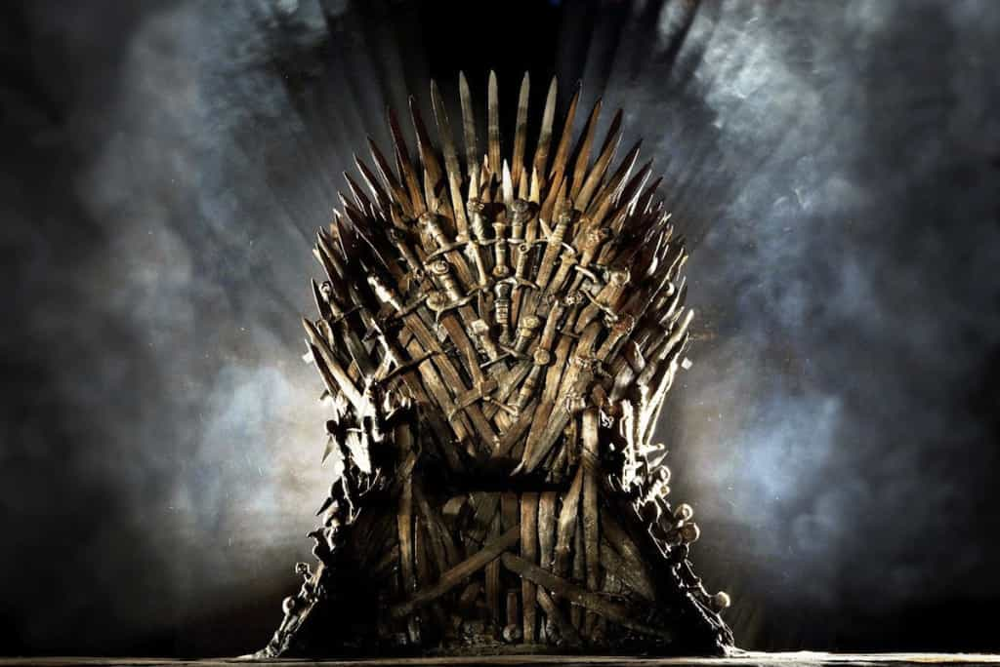

< < < Back
Has Game Of Thrones Lost Its Magic? – Return Of Kings
It’s fair to say that the sixth season of Game Of Thrones has been divisive. Some fans have been enthusiastic about it, and it continues grip millions. However, there has been a growing mood of discontent amongst some. Many have commented that this has been the worst season in terms of quality.
Is there any merit in this? The season has had its moments. The Battle of the Bastards episode will go down as a classic, even if purely for the stunning cinematography. Likewise, the “Hold the door” reveal was highly emotional, and finally gave some payoff to the long-running Bran subplot.
However, these highs were punctuated with long stretches of superfluous and uninspiring storyline. Indeed, the overall narrative came across as disjointed. On top of this, character development was poor, certainly by the show’s previous standards.
Where did it go wrong?

The obvious difference is that this is the first season where the show has not had George R.R. Martin’s books to rely on. Without Martin’s guidance, the writers seem to have seriously run out of ideas.
This is apparent from the number of irrelevant and uninspired storylines. Namely, the Dorne story arc has been dire. Whilst the southern region took an integral role in the books, the show seems to have tinkered with and then sidelined Dorne. The writers killed off the Prince, with the backdrop of a female cabal led coup. However, there was no serious effort to develop on this, not in this season anyway.
Meanwhile, Arya’s journey continued to meander along. Her long stay with the Waif and Jaqen in Braavos added little, and the regular beatings soon lost their shock value. It was a relief to finally see her back in Westeros, in the midst of the action. Obviously, the Braavos adventure was done with the intention of turning Arya into a skilled assassin, ready to take revenge on the Starks’ enemies. This piece of character development was done in the most ham-fisted manner, though.
That brings me onto the character development failures of the two big-hitters of the series: Daenerys and Jon Snow. Jon Snow’s resurrection was the source of great speculation and hype in the run up to the season. When it came, though, I couldn’t help but feel a massive sense of disappointment.
He was not the vengeful, dark, swashbuckling messiah many were expecting. Rather, he seemed meek, bland, and insipid. This is not simply a case of the writers accounting for a loss of confidence after Snow’s betrayal by his men. The writing for Snow’s character was just poor. He was ironically a moribund presence throughout.
At the opposite end of the scale is Daenerys, a character who has become so one-dimensional and over-the-top as to be a caricature of herself. The Mary-Sue archetype is a common trope—a character who can do no wrong. This is exactly what Daenerys has morphed into. She is perfect, a woman who inspires devotion in all she meets, the champion of the people, mother of dragons etc. In truth, her constant proselytization and self-righteous manner have become plain annoying.
She is also apparently indestructible. Many times she has found herself on the edge of failure, only to prevail thanks to a mixture of her own cunning and her dragons. Admittedly this was awe-inspiring in season 3 when she dramatically took down Nakloz with the help of The Unsullied. But the writers seem set on shoehorning an imitation into every season. This time, it was her miraculous conquering of the Dothraki (she burned down the holy temple of Vaes Dothrak in the process). It was underwhelming, and it all seemed so overdone.
Essentially, Daenerys is now a character with no edge, a boring goody-two-shoes. This is a far cry from the books, where she takes on a much more interesting demented turn, mirroring the Mad King.
Where next for the series?

Perhaps I have been overly harsh. For all the flaws, Game of Thrones is still a good show, and there were moments to keep the fans going. After all, the audience continues to grow, as does the accolades and influence. It is just that this season fell short of the incredibly high standards set by the first few.
This is partly down to the fact that this has been something of a transitional season. The writers have had to take disparate story lines and direct them back to the climax in the next two seasons, which will be the last. In this, they have succeeded. All the main players are now in or on their way back to Westeros.
Hopefully, the next season is where it will really heat up, as the ultimate fate of the Iron Throne becomes a little clearer.
Read More: How Feminism Is Ruining “Game of Thrones”